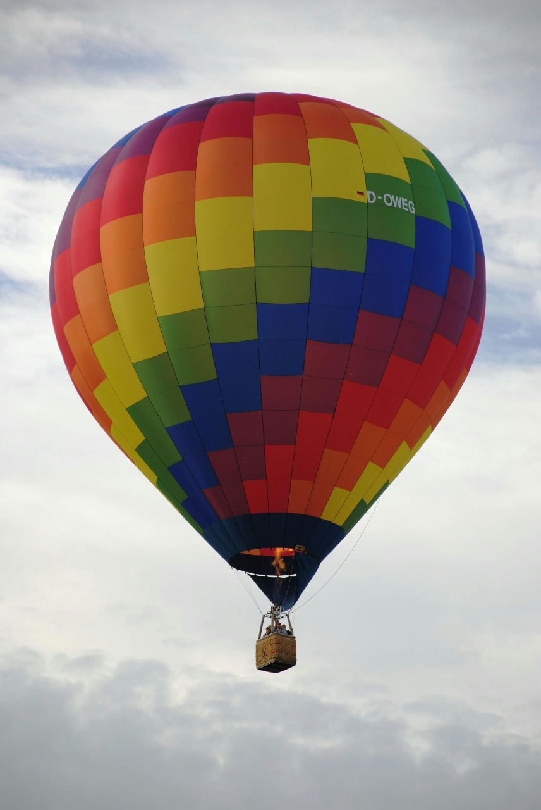

Hot-air balloons are commonly used for recreational purposes. In addition to quiet morning or afternoon flights drifting cross-country to enjoy the view, many balloonists enjoy competitive sporting events and attempting to set new records. A balloonist may fly alone in the basket or carry several passengers. Often several balloons meet to launch together without any competitive goals. Individual flights generally last from one to three hours and may go several kilometres, though they often land very close to the take-off point.
1965 U.S. National Championship balloon races 1965 U.S. National Championship balloon racesHot-air balloons in the 1965 U.S. National Championship balloon races at Reno, Nevada. Balloon rallies may consist of just a few balloons for a one-day outing or up to several hundred balloons for a weeklong festival. Competitive events include distance within a time limit, spot landing, and “hare and hound” races. Hare and hound races are easy to organize and judge since they only require one (hare) balloon to launch first and fly a reasonable distance. The competitors attempt to land as close as possible to the hare’s landing position. In crowded conditions, markers are often dropped to simulate the landings, and the balloons fly on to more open locations.